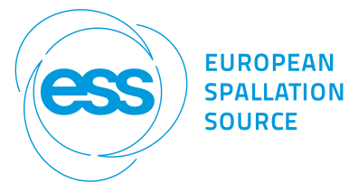

DMSC Integration Testing
Last updated: October 31, 2026 07:27:40
Test: nexusfiles-scipp|odin|odin_read_detector_everything|orca
2026-10-31 00:33:00 [
22083
]: success
View job log here
Test passed, nothing to report